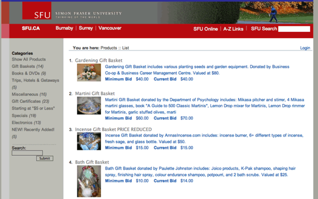
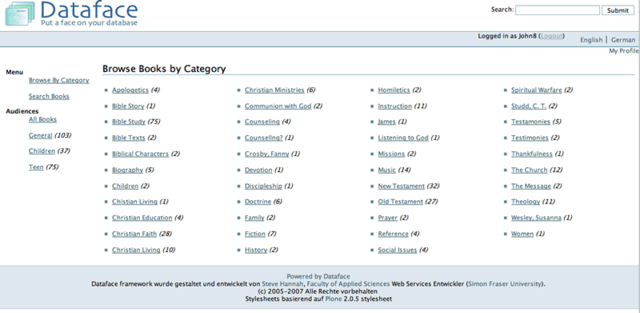
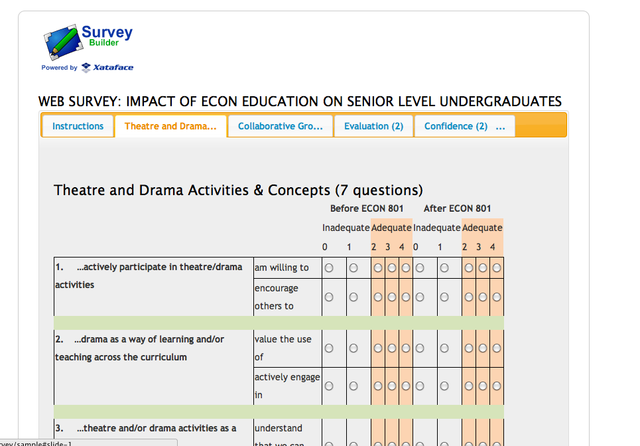
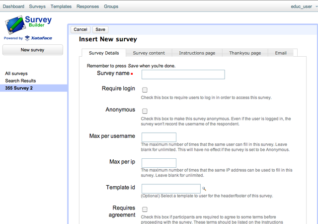

Preface
1. Pre-history of Xataface
Xataface was first released in 2005. I had just been hired as a web services developer in the Faculty of Applied Sciences at Simon Fraser University, and I was inheriting resposibility for the maintenance and development of a relatively large content management system that had been built in-house, originally in PERL, and later ported to PHP.
This system, named "Group Content Management System", or GCMS for short, was used to manage information about all of the research groups in the faculty. It included profiles for faculty members, grad students, labs, research groups, publications and projects. It included administrative back-ends for administrators to update all of these profiles, and it served as a platform to publish web sites for faculty members and research groups.
The MySQL database, on which it was built, included dozens of tables, and a fairly complex set of relationships. The PHP code for the application suffered from too many hands in the kitchen, with no central API to manage business rules. Each form included custom PHP code and SQL commands to handle layout and validation. It was not "a pleasure" to work on.
At my previous job, in the Faculty of Education, I had built many similar systems, so I had reached the point where I was a little bored of the tedium involved in creating CRUD applications, as they were known.
|
Note
|
CRUD stands for "Create Read Update Delete", and it refers to a class of applications where the primary functions involve creating, reading, updating, and deleting records in a database. |
In the Faculty of Education we had used FileMaker extensively for our in-house databases. It made the creation and maintenance of complex databases remarkably simple, and it provided an instant administrative user interface that was friendly for the clerical staff to maintain the database content themselves. I always felt limited by FileMaker though.
As long as you’re playing inside FileMaker’s box, it was great. But if we wanted to integrate these databases into our web site, things got tricky. At the time, you needed FileMaker server, and the web connector, which both carried expensive licenses. We did have these products in the Faculty, and we did use the web connector to publish a few databases on the web, but it wasn’t performant and you couldn’t just use SQL to query the database.
We used FX.php for interacting with the FileMaker database, which provided quite a nice abstraction layer, but we couldn’t benefit from FileMaker’s UI creation tools at all. We were building our UIs from scratch, essentially, writing our own UI, validation, and queries. In fact, I created a predecessor to Xataface that was built on FX.php, which generated the UI automatically using some config files, much the way that we do in Xataface. This worked, pretty well, but, the reliance on Filemaker made our solutions less portable and slower than I would have liked. At this point, we weren’t benefiting from FileMaker’s UI development strengths at all since I was building the UI entirely in PHP, so I figured, why not try to do the same thing with a free, fast, ubiquitous database like MySQL.
And so, Xataface was born
|
Note
|
Originally Xataface was called "Dataface", but a Texas computer company named "Dataface" took exception to our name, and sent me a cease and desist letter. So I changed the name to Xataface |
1.1. The Vision
Most applications that I was building for the faculty had two parts:
-
The "public" front-end, which was usually integrated into a public website. This might be the faculty profiles section of the website where faculty members' publications are displayed. These pages would be generated using PHP, and pulling data directly from the database.
-
The administrative back-end. This is the interface that allows the clerical staff to update the faculty profiles in the database. Some applications will have a single user managing all of the content in the database, while others will allow multiple users to update different content.
The public front-end would usually be created using HTML, CSS, and standard PHP, to fetch data from the database and display it. Quite often, the website would already have a template, so it would just be a matter of fetching data from the database and rendering it inside the site’s template. For this portion of the application development, I was happy with the state of existing tools - i.e. vanilla PHP and MySQL to get the job done. Each project was sufficiently different as to not benefit from a standardized framework.
For the administrative back-end, however, the work was tedious. You needed to write forms to add new, edit, view, and delete records from each table. The user interface needed to be friendly for non-technical users, since it would be used by regular folks - secretaries, faculty members, receptionists, etc.. You couldn’t just set up a database administration app like PHPMyAdmin.
It seemed to me that, for this type of application, the database schema already included all of the information needed to generate the user interface. You could look at a table and see exactly what the form would need to look like for editing records on it. VARCHAR fields should use a text field, TEXT fields should use a textarea, DATE fields should use a date or calendar widget etc… If we needed to provide additional configuration, such as explicitly choosing a different widget, or adding validation rules, the developer could create config files using a logical naming convention.
The first goal with Xataface was to see how much of the administrative back-end requirements could be achieved using only the database schema. No configuration files, or custom PHP.
Of course, the first goal cannot be achieved 100%, so, the second goal of Xataface was, to the extent that the first goal cannot be achieved, how much of the administrative back-end requirements could be achieved using only the database schema, and some simple, human-friendly configuration settings.
Unfortunately, the second goal cannot usually be achieved 100%, so, the third goal of Xataface was, to the extent that the second goal cannot be achieved, make sure that the administrative back-end requirements can be fulfilled using as little custom PHP as possible.
The third goal can, in general, always be achieved.
After each application I develop using Xataface, I do a post-mortem to identify:
-
Features that were implemented PHP which can be achieved using configuration directives. I.e. moving features from the 3rd goal, into the 2nd goal. For example, initially, validation had to be handled using a PHP function, but eventually I added configuration directives for validation such as
validators:requiredandvalidators:lettersonly. -
Features that were implemented using configuration directives which can be achieved using heuristics using only the database schema. I.e. moving features from the 2nd goal, into the 1st goal. For example, initially fields marked
NON NULLin the database can default to use thevalidators:requiredoption, so that the user is forced to provide input. -
Features that were implemented in PHP which could possibly be packaged as a reusable module. I.e. reducing the complexity of PHP required to achieve the third goal.
The ultimate goal is to move everything into the first goal, but this will likely never fully occur as there will always be some features that can’t be automatically derived from the database schema - though with the advent of machine learning, I suppose anything is possible.
|
Note
|
NO CODE GENERATION I decided early on, that I didn’t want to use code generation. Most other CRUD frameworks I had experienced used code generation to generate a basic app which would then be customized by the developer. Code-generation sounds great at first, but it quickly becomes unmaintainable. The first app requirements are almost never the final requirements. If you generate PHP code for an app based on the database schema, and then you need to add a column or two, you’ll need to regenerate the code - which will cause you to lose any modifications you made in the mean time. Xataface, instead uses conventions and configuration. If you add a field to the database, you don’t need to regenerate anything. Xataface will automatically include that field in the app from then on. |
2. The Evolution of Xataface
The first project that Xataface was applied to was the Group content management system (GCMS) of the Faculty of Applied Sciences. This was the system that was used to manage the websites for faculty members, research groups, and publications. The database was already built, and there was an existing administrative back-end that was, in my opinion, hard to work with. I replaced this administrative back-end entirely using Xataface. The application itself (not counting the code inside Xataface), contained almost no PHP code, and handful of configuration files. The underlying database was left untouched. The result was an application that was orders of magnitude easier to maintain, and, at the same time yielded a better user experience.


After unrolling this "rewrite" of GCMS, I decided to release Xataface (then Dataface) to the world as an open source project. I created a project on SourceForge, set up a website for it, wrote a "Getting Started" tutorial, and then returned to my day job, developing web applications or the faculty.
2.1. Influence of Plone on Xataface
At the time that I was developing the first version of Dataface, we were using the Plone content management system for the faculty’s website. If you’re familiar with Plone (circa 2005) you’ll recognize the tabs, lists, and navigation menus from the GCMS screenshots. That’s because I used the plone stylesheet as a basis for Xataface’s styles. I really liked the way Plone looked, and the stylesheet had many of the UI elements that I needed for Xataface. I needed tabs - Plone had nice looking tabs. I needed tabular lists. Plone has nice looking sortable lists. I needed navigation menus. Etc… Some of these elements have persisted to present day. Xataface 2.0 included a new default theme, "g2", that introduced a totally new stylesheet, but developers could still "opt out" of the "g2" theme and use the original plone theme. Xataface 3.0 finally eliminates the original theme (nearly) entirely, but if you dig you can likely still find some elements of that original Plone theme.

|
Note
|
From Wikipedia: Plone is a free and open source content management system built on top of the Zope application server. Plone is positioned as an "Enterprise CMS" and is commonly used for intranets and as part of the web presence of large organizations. High-profile public sector users include the U.S. Federal Bureau of Investigation, Brazilian Government, United Nations, City of Bern (Switzerland), New South Wales Government (Australia), and European Environment Agency.[2] Plone’s proponents cite its security track record[3] and its accessibility[4] as reasons to choose Plone. |
Aside from the stylesheet, Plone also inspired some other aspects of Xataface’s design. In particular, Xataface’s use of actions (e.g. the actions.ini file) to inject menus, buttons, and functionality into the UI are directly pulled from Plone.
2.2. Influence of FileMaker on Xataface
I’ve already discussed the fact that FileMaker was a key inspiration for Xataface. I liked the way that FileMaker allowed mere mortals to both create and manage relatively complex databases. It was impressive that an office assistant, with no programming skills whatsoever, could build a fully-functional database application with a nice user interface in a few hours. To do the same thing with PHP and MySQL would take a software developer weeks, and it likely still would have been missing features that the FileMaker app provides out of the box.
The Xataface "Details", "Find", and "List" tabs were an answer to FileMaker’s "Details", "List" and "Find" modes.
The one mode that Xataface didn’t provide an answer for is the "Layout" mode, which is the mode of FileMaker that allows users to design their own forms using a drag and drop palette of widgets and a canvas. Xataface, instead, just used HTML for its views.
One day, I’d like to add such a tool to Xataface, but, frankly, it’s difficult to do well, and time is almost always better spent extending Xataface’s other features.
2.3. Outgrowing the Mould
At the beginning, Xataface was just intended to be an open source alternative to FileMaker. It didn’t take long, however to start growing in its own direction. Today it has become a full-featured platform on which arbitrary data-driven web applications can be built.
Early on, I added support for modules, custom actions, and pluggable authentication. These foundational elements enabled grown into application types not originally envisioned.
Xataface was being downloaded thousands of times per week from SourceForge, and developers were contacting about a diverse range of applications that they were building. Over the next few years, I used Xataface as the foundation for many side projects including:
-
An auction application, WebAuction, which has hosted hundreds of online auctions for non-profit organizations ranging from the United Way, to the SFU Plant Sale.
Figure 6. WebAuction used to host the annual SFU platsale was written with Xataface. -
A church library application, LibrarianDB, for managing the books in a church library.
Figure 7. LibrarianDB, developed with Xataface, was developed to help manage books in a church library -
A general content management system for a website ("Little Content Management System" or LCMS).
-
A registration system for people to apply for sessional instructor, and TA positions in the faculty.
-
Survey Builder, an application for creating and hosting surveys online.
Figure 8. A survey built and hosted by SurveyBuilder.Figure 9. Administrative back-end for SurveyBuilder. This uses the g2 theme. Figure 10. Editing the survey content for SurveyBuilder in the Xataface back-end. This used the CKeditor module for WYSIWYG HTML editing.
Figure 10. Editing the survey content for SurveyBuilder in the Xataface back-end. This used the CKeditor module for WYSIWYG HTML editing.
Over the years, Xataface has added countless features that improve the developer and user experience alike. I have enjoyed building it, and I sincerely hope that you enjoy using it to build your own creations.
Fundmentals
This section covers the fundamentals of Xataface
3. Introduction
Xataface is a simple framework for building data-driven web applications in PHP and MySQL. This section introduces some of the concepts and applications of Dataface. To fully understand what Xataface is, we must first define a few key terms:
Framework - A set of software routines that provide a foundation structure for an application. Frameworks take the tedium out of writing an application from scratch. (From Answers.com)
Data-driven design - Designing an application around the data that it will store.
Xataface is a Framework in the sense that it is a set of classes and libraries that take the tedium out of writing web applications. It provides a simple web interface to a MySQL database enabling users to update, delete, and find data in the underlying database. The interface is targeted at secretaries and end-users as opposed to database administrators.
Xataface enables data-driven design because it allows developers to develop web sites by first designing the database that will be used to store the data on the website, and then design the pages used to display the data. The developer can focus on the data because he or she does not have to worry about having to build forms to update the data. If the requirements of the application change, the developer can simply add a field to the database table and all associated web forms will be updated automatically (because they are all dynamically generated using the database schema).
3.1. Requirements
-
PHP >= 4.3 (for Xataface 1.1.x and lower); PHP >= 5 for Xataface 1.2 and higher
-
MySQL >= 3.2.3 (Some features require 4.1 or higher).
3.2. License
-
GPLv2
3.3. Development Procedures
Identify the data that will need to be stored for a web site.

Design the database using your favorite database administration program (e.g., PHPMyAdmin)

Tell Xataface some DB connection info, and voila! You have an application:
3.4. Why Use Xataface?
Some simple examples similar to those that are frequently encountered by web developers, and how dataface can be used to acheive a solution.
As a web services developer would frequently getting requests to build websites that were manageable by the site owner. Most of these requests also specify certain types of content that must be stored on the website, and much of this content needs to be n-ary (i.e., there will be multiple instances of each type of content). Let me give you an example.
3.4.1. Example 1: Website for Faculty of Widgetry
The Faculty of Widgetry needs a website to publish information about its undergraduate programs. It is important for them to be able to publish admission requirements, and program overviews for each program. It is also important to have course outlines and timetables for each course. The Faculty of Widgetry has 12 undergraduate programs and over 100 courses offered.
Solution 1: Static HTML
To build this web site using only static HTML pages using Dreamweaver or some other HTML editor would require at least 112 pages to be created (one for each course and program). However, once we recognize that there are only 2 types of pages required (one for courses and one for programs), we can reduce the task down to creating 2 templates and filling in the main content for each program and course individually. Most HTML editors have some templating ability so you can make changes to the template and have the changes propogated to all pages that use that template with the click of a button.
This works great, but courses are added frequently, and outlines are changed. Do you really want to receive requests to update all of these pages every time there are changes to make? (If your answer is 'yes', then you probably won’t be interested in reading the rest of this tutorial). Whether the Dean of the faculty knows it or not, it is very important for the program assistants to be able to update these web pages on their own. To acheive these goals you can:
-
Install Dreamweaver on the Program Assistants' computers, teach them how to use it, and allow them to perform updates.
-
Install Contribute, which is a scaled down version of Dreamweaver to make it easier for the Program Assistants to edit the content.
-
Use another solution that is equivalent to one of the above 2 solutions.
Installing Dreamweaver for each Program Assistant is a little overkill, and since it has the ability to do much more than just update content. In addition, Dreamweaver is really a developer’s tool - not a secretary’s tool, so it can be difficult to learn at first. The best reason NOT to install Dreamweaver on the Program Assistant’s computer, however, is that it enables him/her to muck things up by accident (believe me, I has happened to me more times than I care to count).
Admittedly, Contribute is a viable option as it controls access to only certain portions of web pages to be edited, and it is targetted at secretaries (not developers) so it is easier to use. In fact, given the requirements for this web site (as stated above), this is a perfectly good solution. However you better hope that none of the following requirements are added:
-
Each program web page should contain an up-to-date list of all of the courses required for the program, along with a link to the course outline for that course.
-
Course outlines should be available in PDF format as well as HTML format.
-
An index page showing all of the courses available should be added. This page must allow courses to be organized by program, course subject, or course number.
-
Any other requirement that would have information formatted in more than one way.
If any of these requirements are likely to be added (EVER) then you would be well-advised to look into solutions that use a database back-end.
Solution 2: Use a Content Management System (CMS)
There are hundreds of content management systems available that will allow you to store and update content through the web (TTW). Some of them even have an assortment of add-ons that will allow you to store more specific types of information. Some good CMS’s include Plone, Drupal, and Xoops. Suppose we want to develop the Faculty of Widgetry website using one of these CMS’s. Any good CMS will allow you to create and edit HTML documents easily (without having to write any custom products). However, it is often the case that our documents require the content to be structured. For example, each program has some common data associated with it: Program Name, Admission Deadline, Program Description, Outline, Courses, etc… If we want to properly separate data from presentation, we would need to build a special content-type to store our programs. Most CMS’s allow you to develop custom content-types using the underlying programming language and an API (Application Programming Interface). Some API’s are easier to use than others and some are documented better than others. The common element is that each has its own proprietary interface for writing these add-ons.
If you are using a CMS and you are proficient in the creation of add-on content-types, then you will be able to build the Faculty of Widgetry website without great difficulty. However there are a number of reasons why you may choose NOT to use a CMS:
-
Steep learning curve: Depending on the CMS it can be very time consuming and difficult to learn how to use and modify the CMS to suit you purposes.
-
It is over-kill: Most CMS’s are filled with features and modules that you will never need. In fact it can even be a pain to turn them off if you don’t want them.
-
You can get tied into the CMS: When you are using a CMS, you will start developing for the CMS. With all of your content in the CMS it may be difficult to migrate to a different solution later on. (The truth of this statement will vary for different CMS’s). Choose your CMS carefully.
3.4.2. Solution 3: Use an existing Application
OK, OK, let’s not get too carried away with trying to develop the website until we have checked the market to see if someone else has already done it better. Maybe there is already a PHP application that makes websites for Faculties easy. I mean, I can’t be the first person that needed to build a website for a Faculty. In fact if you do a search or go to Hotscripts.com, you will probably find a handful of applications or scripts that almost do what you need. If you’re lucky, maybe you can find an application that does exactly what you need (but frankly, I’ve never been that lucky). If you find one, maybe it’s worth taking it for a test drive. But beware. Using a system that almost does what you need but is difficult to modify to your needs can be worse than building it by scratch. Make sure that you are able to modify the application to suit your needs exactly.
Solution 4: Use PHP and MySQL
If all we want to do is separate the data from the presentation and allow the Program Assistants to update data on the website, why not just design a MySQL database with the appropriate tables and fields to store the required data. In our case we will need 2 tables:
Programs
Fields:
ProgramID : int
ProgramName : varchar
ProgramDescription: text
AdmissionDeadline: date
Outline_HTML : text
Outline_PDF : blob
Courses
Fields:
CourseID : int
CourseSubject : varchar
CourseTitle : varchar
CourseNumber : int
ProgramID : int
CourseDescription : text
Outline_HTML : text
Outline_PDF : blobNow it’s easy to create a few web pages that extract data from the database and displays it as HTML. In fact if there is an existing page template that you can use for the header and footer, you can develop the entire Faculty website in under an hour (you just have to create 3 pages).
Question: How will the Program Assistants update the information in the database?
Answer: OK, let’s assume that you’re not going to teach them SQL and that a DB Admin tool will also be too difficult to learn. Then you have to create HTML forms to update records in the database.
Ouch! What was easy just became hard. Making HTML forms is a real pain, because you have to validate the input, deal with file uploads, and also make sure that everything is stored to the database OK without losing any information. Such a basic task, but it can be very difficult. This is when it is time to use Xataface.
Solution 5: Use Xataface
OK, this isn’t really its own solution. It is more like "Solution 4 Part II", because Xataface is intended to complement your custom application you built with solution 4, by providing an easy-to-use, configurable user interface that is targeted at secretaries and normal users (as opposed to database administrators). A Xataface application takes only seconds to set up and it will provide you with a full user interface for your users to edit information in the database.
4. Xataface Installation
Over the years I have developed several different installation mechanisms for Xataface. At the end of the day, installation only requires that you copy the xataface directory onto your web server. To update it, you simply replace that directory with the new version.
Creating an application with Xataface, however, involves more than just installing Xataface. You need to, at minimum create a config file with your database connection settings, and a 2-line PHP script (usually named "index.php") to serve as an entry point for your application.
And this all assumes that you already have a web server set up with PHP and MySQL, and that you’ve created a database for your application to use.
With version 3.0, Xataface now includes a command line (CLI) utilty to automate common tasks like creating new apps, generating delegate classes, enabling authentication, etc… This tutorial describes the installation and usage of this CLI script for creating and maintaining Xataface applications. If you would prefer to do things manually, you can skip to the "Manual Installation" section.
4.1. Prerequisites
Before you install Xataface, you should have a PHP and MySQL installed. I recommend XAMPP
4.2. Installation using the Xataface CLI
/bin/bash -c "$(curl -fsSL https://raw.githubusercontent.com/shannah/install-xataface/master/install.sh)"|
Note
|
This command will install Xataface at ~/xataface (i.e. inside your home directory).
|
The output of this script will look like:
$ /bin/bash -c "$(curl -fsSL https://raw.githubusercontent.com/shannah/install-xataface/master/install.sh)"
Cloning into 'xataface'...
remote: Enumerating objects: 180, done.
remote: Counting objects: 100% (180/180), done.
remote: Compressing objects: 100% (125/125), done.
remote: Total 12947 (delta 105), reused 110 (delta 50), pack-reused 12767
Receiving objects: 100% (12947/12947), 19.50 MiB | 11.95 MiB/s, done.
Resolving deltas: 100% (7814/7814), done.
Adding /Users/shannah/xataface/bin to your path in /Users/shannah/.bash_profileThis installs the xataface CLI script at ~/xataface/bin/xataface.
5. Creating your first Xataface app
Now that you have xataface installed, we can proceed to create our first app.
|
Important
|
Please ensure that you have both |
Open a command prompt and enter:
xataface create hello-worldThe output will be as follows:
$ xataface create hello-world
Create project at hello-world
Setting up scaffold at hello-world ...Done
Checking for PHPMyAdmin installation...Found.
Linking /Users/shannah/.xataface/phpmyadmin to hello-world/lib/phpmyadmin ...Done.
Copying xataface to hello-world/www/xataface ...Done.
Removing hello-world/www/xataface/site_skeleton ...Done.
Initializing database ...
Starting mysql server...Started Successfully
Bootstrapping database...Done
Stopping mysql server...Stopped
DoneAt this point, you should have a new directory named "hello-world", which contains our application’s directory structure.
We can launch our app by "cd"ing into our new "hello-world" directory and running:
xataface startThis will fire up MySQL and Apache with document root at "www" and the database stored in "data"
The console output will be something like:
Starting apache on port 9090
No services added.
Starting MariaDB
PID FILE /Users/shannah/Vagrant/hello-world/bin/../data/Steves-MacBook-Pro-2.local.pid
Waiting for ready
kill -0 says wait some more...
.Waiting for ready
We are ready
SUCCESS!
About to touch lock file /Users/shannah/Vagrant/hello-world/bin/../tmp/mysql
Exiting with return value 0
Did start mysql server
No services added.
Did start apache serverNow, point your web browser to "http://localhost:9090"
You should see something like:

This database has only a single table named "test", which contains a single column named "test_field". You can add new record by clicking "New Record".
You’ll see a "new record" form:

Enter "Hello World" into the test field and press "Save".
You should see a message saying "Record successfully saved".

5.1. Creating A New Table
Xataface provides an installation of PHPMyAdmin to assist you in building a database for your application. You can access PHPMyAdmin at the URL: http://localhost:9090/phpmyadmin
Open a new browser tab with this URL, and you should see something like:
The database for this app is named "hello-world", and it is listed in the left-hand menu for PHPMyAdmin. Click on that node to expand, it, then select "New":
Let’s add a table called notes, by filling in the new table form as follows:

|
Important
|
Be sure to check the "A/I" box for the "note_id" field so that it will be an auto increment field. |
Press "Save" when done.
Now we want to tell Xataface to use this table in our application. Open the www/conf.ini.php file in our app. The contents will look like:
;<?php exit;
__include__=conf.db.ini.php
[_tables]
test=testThe [_tables] section is used by Xataface to generate the top menu in your application. Let’s tell it to use our new "notes" table by adding the following:
;<?php exit;
__include__=conf.db.ini.php
[_tables]
test=test
notes=Notes (1)-
The left "notes" indicates the table name. The right "Notes" indicates the label that should be used in our tables menu.
Save this file and reload the application in the web browser.
You should now see a "Notes" tab on the top.

Click on this tab, then press "New Record" to see our form for adding records. You should see something like:
This form includes inputs for all of the columns in our table, except the "note_id" column. This is because "note_id" is an auto-increment field and doesn’t require user input.
Each field uses a different type of widget according to the type of the underlying database column. E.g. the "Title" field is a text field because it is a VARCHAR column. The "note_content" field is a text area because it is a TEXT column, etc… You can override the widget that is used to edit any field very easily by editing the "fields.ini" file for the "notes" table, which we’ll do in the new section.
For now we will use this application as is while we explore the application interface.
Enter some dummy data into this form and press "Save". Then press "New Record", and enter another new record. Create 3 or 4 notes with different content so that we have something to play with.
Once you’ve entered a few notes, click on the "Notes" tab to return to the "List" view of the "notes" table. My app looks like the following screenshot, as I’ve entered 3 notes:
5.1.1. Filtering the List
Xataface provides a few different ways to filter the list view. We can:
-
Click on a column header to search by column content.
-
Enter a keyword search into the top right search box, which will look for matches in any column of the table.
-
We can do an advanced "Find" by clicking on the "Find" tab.
Later we’ll also learn how to add "filter" drop-down lists.

5.2. Development Environment
At this point we have a fully-functional database application, and you didn’t have to write a single line of code. Let’s pull the curtain back a little and see what’s going on in our application under the hood.
The "hello-world" directory that was created by xataface when we ran "xataface create hello-world" contains the following folders:

xataface create hello-worldThis root directory comprises a mini development environment for our application. The application itself is entirely contained inside the "www" directory, and when it comes time to deploy the app to production, we will likely only be uploading this directory to the web server.
The subdirectories in this folder include:
-
app - This is a symlink to the www directory, however, in cases where the Xataface app is actually contained in a subfolder of "www", this symlink will point to that subdirectory. The Xataface maintenance scripts always use "app" as the app’s document root (i.e. the directory containing conf.ini).
-
bin - This directory contains a set of maintenance scripts that can be used to automate certain maintenance tasks. This is for the development environment only, and does not need to be copied to the production web server.
-
data - This directory stores the development mysql database files. This is for the development environment only. On the production server, there will likely be a single central MySQL/MariaDB server where your database will reside.
-
etc - This directory stores apache and mysql config files used for the development environment only.
-
install.sql - This stores the SQL to recreate the database.
-
lib - This directory stores some additional libraries that may be useful for the development environment, such as PhpMyAdmin. This is for the development environment only, and should not be copied to the production web server.
-
log - Apache and MySQL log files for the development environment.
-
tmp - The temp directory for the development environment.
-
www - This is the actual directory containing our application. When we deploy to a production, this is the only folder that needs to be copied to the web server.
5.2.1. Application Structure
As mentioned above, the "www" directory contains the meat of our application. Let’s take a look at its contents now.

Let’s take a look at the files that were generated and placed in this directory.
-
conf.db.ini.php - Config file containing only the database connection information.
-
conf.ini.php - Config file containing application-wide configuration.
-
index.php - The entry point to your application.
-
templates_c - This directory containes compiled Smarty templates. This needs to be writable by the web server.
-
Web.config - A security file for IIS to prevent it from serving ".ini" files. This is really only necessary when using Xataface on IIS. The .htaccess file provides the equivalent functionality for Apache.
-
xataface - The actual xataface library used by the app. Updating your application to a newer version of Xataface later will be as simple as replacing this directory with the latest version.
-
.htaccess - This file is omitted by the screenshot, but the app also contains an .htaccess file which prevents Apache from serving ".ini" files.
|
Note
|
In this tutorial you’ll notice that all .ini files have a .php extension. E.g. we have "conf.ini.php" rather than "conf.ini". Xataface supports both notations, but you should choose one and stick to it. The benefit of using the ".php" extension, is that you can block any PHP-enabled web server from serving the file by adding ;<?php exit; on the first line of the file. We also include an .htaccess file and Web.config file for blocking .ini files, but these only apply to IIS and Apache web servers respectively. If you’re using a different web server, such as NginX or the PHP development server, then these .htaccess will be ignored and your .ini files may get served to the public - which you don’t want.
|
5.3. Changing Field Labels
Out of the box, Xataface will assign appropriate labels to its form fields based on the underlying columns. However, you can override these labels very easily.
To customize labels for the "notes" table we need to create a file at www/tables/notes/fields.ini.php
The xataface CLI script will generate this file for us via the command:
$ xataface create-fieldsini notes
Created tables/notes/fields.ini.phpAs the output indicates, this created a file at tables/notes/fields.ini.php. Let’s open it up to take a look at the contents.
;<?php exit; (1)
[note_id]
[title]
[note_content]
[date_posted]
[status]-
First line for security. It will block any php-enabled web server from serving this file.
It has generated empty sections for each field in the "notes" table. All configuration options for a field should go in its section.
Now let’s customize some field labels and descriptions. We can set a field’s label using the "widget:label" property, and we can add some "help" text using the "widget:description" property. Let’s customize the labels and descriptions for this form by adding these properties.
After making a few changes, my fields.ini file now looks like:
;<?php exit;
[note_id]
[title]
widget:label=Note title
widget:description=Enter a descriptive title for this note
[note_content]
widget:label=Contents
widget:description=Enter the full content of the note here
[date_posted]
[status]Now, open your browser again and try to add a new note. You’ll notice that the form has changed:

widget:label and widget:description properties I added to the fields.ini file.6. A More Complex Example: Faculty of Widgetry App
sf
Security
The following chapters cover all things security-related in Xataface.
7. API Authentication
Xataface provides a REST API for authentication so that you can access your application using a REST client. When using this API, you’ll perform a request to the "login" action to obtain an authentication token. You can then make authenticated requests to your app by adding this token in the Authorization header as a bearer token.
7.1. Login
To log in using the API, simply perform a POST request to ?-action=login&--no-prompt=1
-
UserName- The username to log in with. -
Password- The password to log in with.
If login succeeds, you’ll receive a JSON response with a token. E.g.
{
"code":200,
"token":"576646...2dDRuOGUycGI=",
"message":"Logged in"
}An unsuccessful login will look something like:
{"code":500,"message":"No UserName provided."}7.2. Making Authenticated Requests
Once you have obtained a token, you should include this token in the Authorization header of HTTP requests. E.g.
curl -H 'Authorization: Bearer {TOKEN}' https://example.com?index.phpBut replace {TOKEN} with your token received during login.
7.3. Logging Out
To log out, simply perform a POST or GET request to ?-action=logout&--no-prompt=1
Actions
The following sections pertain to actions in Xataface. An action may either be a menu item, or an HTTP request handler. Or it can be both. They are defined in the actions.ini file (or actions.ini.php file) of your application, and their "handlers" are defined inside the "actions" directory of your application.
8. Using Material Icons
Problem
You want to use a material icon for a menu-item in your application, instead of an image.
Solution
The default theme of Xataface includes the material icons web font, so you can use any icons in that font on your actions via the materialIcon directive in your action. For example, suppose we want to add a "Play" button to the rows of our table in list view. We define our action as follows:
[play]
condition="$query['-table'] == 'songs'" (1)
category=list_row_actions (2)
materialIcon=play_circle_outline (3)
label="Play" (4)
description="Play narration" (5)
url="javascript:playSong()"-
The
conditiondirective is used to limit our action so it only displays for the "songs" table. -
The
categorydirective makes the action appear in the "list_row_actions" menu (which is displayed as icons in each row of the list view. -
The
materialIcondirective specifies that we want to use the play_circle_outline material icon. -
The label, which is hidden for this menu type because the stylesheet is set to show only icons for the "list_row_actions" action. It is still a good idea to define the label though in case this action is used in other contexts.
-
The description which is shown as tool-tip text if the user mouses over the action.
Finding the Right Material Icon
You can browse the available material icons here.
The label below the icon is the name of the icon, that you would use for your materialIcon directive. If the lable is truncated, you can click the "Selected Icon" button in the lower left to get a more detailed view.
Form Customization
The following chapters form a sort of cook book with recipes for customizing forms in Xataface.
9. Multiple Tabs in Forms
Problem
You want to split your edit/new record forms into multiple tabs
Solution
Use the `tab`directive in each field definition of the fields.ini file to specify the "tab" that each field should be placed in.
The tab directive of the fields.ini file specifies which tab of the record edit form a field should be displayed on. Xataface supports multiple tabs on the edit form by way of this tab directive. If no fields contain the tab directive then all fields are displayed in a single tab (named main).
Example 1: Placing address info on separate tab Consider the following people table:
CREATE TABLE `people` (
person_id int(11) not null auto_increment primary key,
first_name varchar(32) not null,
last_name varchar(32) not null,
address varchar(100),
city varchar(100),
province varchar(100),
country varchar(100),
postal_code varchar(20)
)We want to split the fields into two tabs: "Personal Info" and "Address Info"
We’ll do this in two steps. We use the tab directive to assign all address-related fields to the address_info tab.
[address]
tab=address_info
[city]
tab=address_info
[province]
tab=address_info
[country]
tab=address_info
[postal_code]
tab=address_infoNow, when we load the edit form of the people table, we see two tabs: "__main__" and "address_info"


|
Tip
|
__main__ is the name assigned to the default tab (for all fields that don’t have a tab defined explicitly.
|
Customizing the tab labels
Next we will customize the tab labels by adding the following to the beginning of the fields.ini file:
[tab:__main__]
label="Personal Information"
[tab:address_info]
label="Address Information"
{kind=link}
Reordering the tabs
If we want to reorder the tabs so that the "address_info" tab comes first, we would just reorder the definitions of the tabs:
[tab:address_info]
label="Address Information"
[tab:__main__]
label="Personal Information"10. Delegating "New Record Form" to a Different Table
Xataface allows you to delegate "new record" input to a different table. E.g. Given a Table A, you can configure Xataface to use the "new record" form for a different table B for inserting new records.
Why might you want to do this?
Xataface forms are built around the data model of the underlying table. It generates input fields for each column of the underlying table. In some cases, the "new record" form may want to take data in a different form that allows you to generate the underlying data.
For example, if you have a "Contacts" table, but you want the user to be able to insert contacts by simply entering their employee ID - and this will be used in the back-end to fetch some initial data about the user from another database. In this case, your "new record" form should really just include a single field: "Employee ID".
10.1. Instructions: Short Version
Definitions
-
SOURCE_TABLE- The source table into which you wish to insert records. -
TARGET_TABLE- The target table whose "New Record" form you wish to use for the UI.
Steps:
-
Add the
new_record_table=TARGET_TABLEdirective to the beginning of the fields.ini file of the SOURCE_TABLE. -
Add a column named
xf_inserted_record_idof typeTEXTinto the TARGET_TABLE. -
In either the
beforeInsert()orafterInsert()hooks of the TARGET_TABLE, process the inputs, and programmatically insert the appropriate record into the SOURCE_TABLE. -
Also inside the
beforeInsert()orafterInsert()hooks of TARGET_TABLE, set the value of thexf_inserted_record_idto the record ID of the SOURCE table that you programmatically inserted in step 3.
10.2. Instructions By Example
Let’s take the example I mentioned above. We have a "contacts" table with lots of details about a contact, including employee_id. When the user inserts a record, all they need to do is enter the "employee_id" and it will pull the rest of the data in from an external database. So we will create a second "dummy" table that is only here to facilitate the creation of a new contact. It includes only a single field "employee_id".
Our two tables might have the following definitions.
CREATE TABLE contacts (
employee_id VARCHAR(32) PRIMARY KEY,
first_name VARCHAR(64),
last_name VARCHAR(64),
....
)
CREATE TABLE new_contact_form (
employee_id VARCHAR(32) PRIMARY KEY,
xf_inserted_record_id TEXT (1)
)-
The
xf_inserted_record_idfield is a special field that will be used to pass the record ID of the corresponding contact record after insertion.
Step 1: Set new_record_table
At the beginning of the fields.ini file for the "contacts_table", add:
new_record_table=new_contact_formThis tells Xataface that the "new" action for the "contacts" table should redirect to the "new" action of the "new_contact_form" table.
Step 2: Implement beforeInsert() Hook
If we simply defined the new_record_table directive, it would result in the user being redirected to the new_contact_form table when they want to insert a new record into the contacts table, but it wouldn’t actually insert anything into the contacts table. Nor would it return them back to the contacts table when done. It would just leave the user in the "new_contacts_form" table - and would insert the record there only.
If we want to actually insert a record into the "contacts" table, we just do this programmatically. Preferably inside the beforeInsert() or afterInsert() hooks of the new_contact_form table.
In the delegate class for the new_contact_form, we’ll do:
<?php
class tables_new_contact_form {
function beforeInsert(Dataface_Record $record) { (1)
$employeeData = fetchEmployeeData($record->val('employee_id');
// Assume that you've implemented fetchEmployeeData() elsewhere to get
// the employee info from another database
if (!$employeeData) {
XFException::throwValidationFailure("Failed to find employee data for given employee ID.");
}
// Create a new contact record
$contact = new Dataface_Record('contacts', array()); (2)
$contact->setValues(array(
'employee_id' => $employeeData['empid'],
'first_name' => $employeeData['empFirstName'];
...
));
$res = $contact->save(); (3)
if (PEAR::isError($res)) {
XFException::throwValidationFailure("Failed to insert contact: ".$res->getMessage());
}
// Store the record ID of the new contact record
$record->setValue('xf_inserted_record_id', $contact->getId()); (4)
}
}-
We implement the
beforeInsert()callback, which is executed before the "new_contact_form" record is inserted. -
We create a new
Dataface_Recordobject for the "contacts" table, and insert data for the contact. -
We call
save()to store the "contacts" record. -
Get the ID of the newly inserted contact, and add it to the
xf_inserted_record_idfield of the "new_contact_form" record. This will be used by Xataface after to redirect back to the original contact table record when it is done.
11. Using ownerstamp to Mark Record Ownership
Problem
You want to "stamp" a record with the username or user ID of the user who created a record automatically.
Solution
Use the ownerstamp fields.ini directive on the field that you wish to store the userid in.
For example, consider a table "posts" that stores posts that users of the system make. This table has a posted_by field to record the user that posted it. You want this field to automatically populated with the user ID of the user that is currently logged in, so you can add the ownerstamp directive in the fields.ini file.
[posted_by]
ownerstamp=1Adding this directive does a number of things simulataneously:
-
It will set the user ID of the currently logged in user at the time that the record is inserted.
-
It will prevent the field from being updated later.
-
It will hide the "posted_by" field from all forms.
Discussion
Before the "ownerstamp" directive existed, you could accomplish the same thing by implementing a beforeSave() trigger and setting the field value to the currently logged in user, changing the field permissions so it can’t be changed after the fact, and setting the widget type to "hidden". But since this is such a common requirement, it is much simpler to just set ownerstamp=1 and be done with it.
12. Redirecting User to Different Page After Saving Record
Problem
By default, when the user presses "Save" on the "Edit record form", they will be redirected back to the edit record form again after the save is complete. You want to redirect them to a different page, such as the "View" page.
Solution
Override the "edit" action in your actions.ini file to specify the "after_action" directive.
E.g. Add the following to your application’s actions.ini (or actions.ini.php) file.
[edit > edit]
after_action=viewIf you only want to apply this rule to a particular table, you can use the after_action.{TABLENAME} instead. E.g.
[edit > edit]
after_action.users=view|
Tip
|
The "new" action also supports the |
13. Auto-Updating a Field When Other Fields are Changed
Problem
You want the contents of a field to be automatically updated when the value of another field on the same form is changed. For example, you have a "Program Title" field that should automatically be populated when the user selects the program ID.
Solution
You can use the ajax_value fields.ini property to make a field dynamically update whenever one or more other fields on the same form is changed. When a change is detected, the field will load new data from a JSON web service specified by the URL in the property.
Syntax:
ajax_value=<url-template>#<json-path-query>
<url-template> is a string that is used as a template for the URL to the web service from which to load the field’s content. The template should contain one or more placeholders of the form {fieldname} which are replaced by the form value of the corresponding field.
<json-path-query> is a jsonPath query describing which part of the JSON response should be used as the new field value.
|
Tip
|
You can omit the json path query (everything from #), if the HTTP request will just return plain text or HTML.
|
Triggers
The field will be updated whenever the URL would be changed. The URL template may include variables with the syntax {fieldname} that will be replaced by the corresponding field when generating the web service URL. If the values of any of the fields marked as variables changes, it will trigger an update.
Example
Consider the following fields.ini file:
[source,ini
[ProgramID]
widget:type=select
vocabulary=programs
[ProgramTitle]
ajax_value="?-action=export_json&-table=Programs&ProgramID={ProgramID}#0.ProgramTitle
In the above example, whenever the ProgramID field is changed (say to a value of "1"), it will trigger an AJAX request to index.php?-action=export_json&-table=Programs&ProgamID=1.
The JSON response will look like:
[{"ProgramID":"1", "ProgramTitle":"Some program", ....}]When it receives the response, it will take the ProgramTitle attribute of the first result in the JSON response, and place it in the ProgramTitle field. In the above example, it would be "Some program".
|
Tip
|
You can use the |
14. Displaying Field Preview using AJAX
Problem
You want to display some richer feedback to the user based on the value entered into a field. For example, on a field where the user enters a URL, you may want to display some information about the URL so that the user knows that they have entered the correct URL.
Solution
Use the ajax_preview directive, which works just like the ajax_value directive, except that it displays the result of the AJAX request just below the field as a "preview", rather than in the field itself.
Consider the scenario where you have the following table structure:
CREATE TABLE posts (
post_id INT(11) PRIMARY KEY AUTO_INCREMENT,
page_url TEXT,
article_title TEXT,
article_description
)
CREATE TABLE user_posts (
user_post_id INT(11) PRIMARY KEY AUTO_INCREMENT,
post_id INT(11),
comment TEXT
)The "posts" table is central repository of posts. The user_posts table is for a user to "post" a comment about a post. The idea is that a particular URL should only be imported into the "posts" table once, but many users can post comments around a "post" in the "users_posts" table. We will only give the user direct access to the "user_posts" table, where they will provide the URL they want to post along with a comment about the post.
The challenge here is that the user_posts table doesn’t have a "page_url" field - just a post_id field. We could use the depselect widget here, but this adds a step. It would be better to hide the post_id field, and just provide a page_url field, which will automatically populate the "post_id" field with the correct post ID from the posts table.
So for our first step, we’ll hide the "post_id" field and add a page_url transient field:
[post_id]
widget:type=hidden
[post_url]
transient=1
order=-1
widget:description="Please enter the URL to the article you wish to post"When the user enters a URL into the post_url field we want to trigger an AJAX request to a custom action that will:
-
See if a post has already been added at that URL, and return the ID of the post if found.
-
If the post hasn’t been added yet, we add it, and return the ID.
In either case the AJAX request should obtain a post ID which can be inserted into the post_id field.
Such a custom action might look like the following:
<?php
class actions_get_post_id {
function handle($params) {
header('Content-Type:text/plain');
if (!@$_GET['page_url']) {
return;
}
//echo $_GET['page_url'];exit;
$user = getUser();
$post = df_get_record('posts', array('page_url' => '='.$_GET['page_url']));
if (!$post) {
$post = new Dataface_Record('posts', array());
$post->setValues(array(
'posted_by' => $user->val('user_id'),
'page_url' => $_GET['page_url']
));
$res = $post->save();
}
echo $post->val('post_id');
}
}
?>We will use the ajax_value directive on the post_id field to automatically populate it from that AJAX action when the value of page_url changes.
[post_id]
widget:type=hidden
ajax_value="?-action=get_post_id&page_url={post_url}"Lastly, we want to display a preview of the page content below the page_url field. We will use the ajax_preview directive for this. First we’ll create an AJAX action to display this preview, given the post ID.
<?php
class actions_ajax_post_preview {
function handle($params) {
if (!@$_GET['post_id']) {
return;
}
$post = df_get_record('posts', array('post_id' => '='.$_GET['post_id']));
if ($post) {
df_display(array('post' => $post), 'ajax_post_preview.html'); (1)
}
}
}
?>-
"ajax_post_preview.html" template should be in the application’s templates directory.
Now we can use this from our `ajax_preview directive:
[post_url]
transient=1
order=-1
widget:description="Please enter the URL to the article you wish to post"
ajax_preview="?-action=ajax_post_preview&post_id={post_id}"
Bonus Points
We’re not quite done. Our current setup works great for the new record form, because the user will be adding the URL. But if they’re editing an existing record, the post_id value will already by set, but the user hasn’t entered anything the post_url field (because it is transient). We need to add an ajax_value directive to the post_url field so that it auto-populates based on the value of the post_id field.
We’ll use the export_json action as our AJAX action so we don’t need to create a custom action.
[post_url]
transient=1
order=-1
widget:description="Please enter the URL to the article you wish to post"
ajax_preview="?-action=ajax_post_preview&post_id={post_id}"
ajax_value="?-table=posts&-action=export_json&post_id=={post_id}&-mode=browse&-limit=1&--fields=page_url#0.page_url"15. Disabling Client-side Validation
Problem
You want to disable client-side validation for a particular field, but keep the server-side validaton.
Solution
Use the widget:validation=server fields.ini directive.
E.g.
[myfield]
widget:validation=server16. Setting Fixed Number of Rows in the Grid Widget
Problem
You have a grid widget for editing related records on a form. Rather than have it start with only a single row, and have additional rows appear only as the user enters data into the last row, you want it to display a fixed number of rows and have some of the data pre-populated.
Solution
Use the widget:fixedrows directive to a specific number of rows, and you can implement the fieldname__prepareGridData($record, $cols, $data) delegate method to return the data to prepopulate the grid with.
[exam_results]
relationship=exam_results
widget:type=grid
widget:fixedrows=3
widget:cols="exam_name,exam_grade"class tables_students {
function exam_results__prepareGridData($record, $cols, &$data) {
if (count($data) == 0) {
$data[] = array('exam_name' => 'Midterm 1', 'exam_grade' => '');
$data[] = array('exam_name' => 'Midterm 2', 'exam_grade' => '');
$data[] = array('exam_name' => 'Final', 'exam_grade' => '');
}
}
}List Customization
The following chapters form a sort of cook book with recipes for customizing result lists in Xataface.
17. Adding Option to Filter Result LIst
Problem
You want to add a drop-down list for the user to select filters for the result set.
17.1. Solution
Use the filter directive in the fields.ini file on any field that you want the filter to be added for.
[test_field]
filter=1Now, if you navigate to this table’s list view, you’ll see a drop-down list at the top of the results where you can select all of the distinct values in the test_field column.


If you select one of the options, it will filter the results to only show those results that match the filter.
18. Hiding Filter Counts
Problem
You want to hide the counts for each entry in the "filters" drop-down list on the list view. By default when you add a filter list via the filter directive, each row has the "count" displayed beside it:

We want to hide this.
Solution
Use the show_filter_counts preferences directive to hide these counts as follows. In the _prefs section of the conf.ini file, add:
show_filter_counts=0After this change, the filter lists will look like:
19. Sorting Filter Results
Problem
Filter lists are sorted by the "filtered" field in alphabetical order. You want to sort the filter lists on some other column.
Solution
Use the filter.sort. fields.ini directive to specify the field that the filter should sort on.
E.g.
[city]
filter=1
filter.sort="city desc"Searching
The following section include tips on configuring search support in Xataface application.
20. Case-Sensitive Searches
Problem
You searches on a particular column to be case-sensitive. (E.g. If the user searches for "Bob", it should match "Bob" but not "bob").
Solution
Use the collate fields.ini directive to "utf8_general_cs" (or any other supported collation that is case-sensitive.
E.g.
[source,ini
[name] collate=utf8_general_cs
Discussion
By default, the case-sensitivity of searches depends on the collation of the underlying table and column in MySQL. If the column was defined with a case-sensitive collation (e.g. utf8_general_cs), then all searches on this column will be case-sensitive. If, however, it was defined with a case-insensitive collaction (e.g. utf8_general_ci), all searches will be case-insensitive. If you want to change the behaviour of the app, you could simply change the underlying collation. But in some cases you may not want to modify the table structure (or you won’t have access to the table structure). In such cases, the "collate" directive is helpful.
21. Explicitly Specifying Case-sensitivity of a Search
Problem
You want to perform a case-sensitive search on a field that has a case-insensitive collation.
Solution
Wrap the query value in a command wrapper, and use the "cs" command to specify "case-sensitive" (or "ci" to specify case-insensitive").
E.g.
If you want to search for "Bob" in the name field, enter the following in the search field for "Bob".
#Bob#cs
If you, instead wanted to explicitly perform a case-insensitive search you would enter
#Bob#ci
File Uploads
The following sections pertain to management of file uploads.
22. Specifying Content Disposition of File Download
Problem
By default the contents of blob fields and container fields are downloaded as a file download in the browser. You want the browser to navigate to the file instead of downloading it.
Solution
Use the contentDisposition=inline fields.ini directive.
[myfield]
contentDisposition=inlineNow, when users click on the link for this field, the browser will navigate to the field content.
|
Tip
|
The contentDisposition directive will be used to set the Content-Disposition HTTP header. Learn more about this header here.
|
HTTP Request Handling
The following sections include tips for configuring how Xataface applications respond to HTTP requests. This includes topics such as event routing, response types, etc…
23. Specifying a Default Action
Problem
You want your application to use a default action other than the Xataface default, if the user doesn’t explicitly provide an "-action" parameter.
Solution
Use the default_action conf.ini directive.
E.g.:
default_action=findThis would result in the user being directed to the "find" action by default.
|
Note
|
If "default_action" is not specified, then Xataface will use the "list" action as the default. |
24. Using Different Default Action Depending on Table
Problem
You want to specify a default action only for one table in your application. The "default_action" conf.ini directive sets the default action application-wide.
Solution
Use the default_action.tablename directive in your conf.ini file. (tablename should be replaced with your desired table name. For example, suppose I want to make the "view" action the default action for the "posts" table, then I would define the following at the beginning of the conf.ini file:
default_action.posts=view25. Specifying Default Query Parameters for Default Actions
Problem
You want to supply additional query parameters for your default actions. These parameters should only be applied when the default action is used.
Solution
Use the default_params.tablename directive. E.g.
default_action.posts=view
default_params.posts="post_id=2&foo=bar"These default parameters will be used if the user requests a URL like:
index.php?-table=posts
The above would effectively be the same as:
index.php?-table=posts&-action=view&post_id&foo=bar
|
Important
|
The index.php?-table=posts&-action=view The default params would not be applied because the "-action" has been specified explicitly by the user. |
The above example shows the default_params.posts directive specified as a URL-encoded string. However, you can also define the parameters as a section.
E.g.
[default_params.posts]
post_id=2
foo=barThis would be equivalent to
default_params.posts="post_id=2&foo=bar"26. Showing the "Edit" Tab By Default for Record Details
Problem
By default, when the user clicks on a record to see its details, they will be shown the "View" tab. You want to show them the "Edit" tab instead.
Solution
Use the default_browse_action directive of the conf.ini file. This directive is analagous to the default_action directive, except it is only applied when the user requests the "browse" action, which is the default action used for displaying record details.
The direct solution to our problem would be the following at the beginning of the conf.ini file.
default_browse_action=edit|
Tip
|
Just like the Only setting the default browse action to edit on the "posts" table.
|
27. Setting Default Query Parameters for the browse Action
Problem
You have specified a custom action that you are using as the default "browse" action for your table via the default_browse_action.mytable=myaction directive. However your action requires some additional query parameters to work correctly. You need to add these default parameters somehow.
Solution
Use the default_browse_params.tablename directive to add parameters to the browse action. This directive works similarly to the default_params.tablename directive. E.g. Let’s add a "foo" query parameter by default when the user accesses the "browse" action on the "posts" table.
default_browse_action.posts=myaction
default_browse_params.posts="foo=bar"|
Tip
|
The above example shows the E.g. This would be equivalent to |
28. Setting a Related Records Tab as the Default Browse Action
Problem
When the user clicks on a record in the "list" view, you want them to see a related record tab instead of the "View" tab by default.
Solution
We can achieve this by way of the default_browse_params.tablename conf.ini directives. For example, suppose we wanted to show the "authors" relationship of the "posts" table by default when a post’s details are shown:
default_browse_params.posts="-relationship=authors"Notice here, that we didn’t actually need to use the default_browse_action parameter to specify that it should use the related_records_list action (which is the action used to display a related list). Xataface infers this by the presence of the "-relationship" directive.
Tables, Views, and Queries
The following chapters pertain tables, views, and queries. It includes tips on how to set up your tables, views, and queries for optimal performance and flexibility.
29. Accessing an SQL query like a Table
Problem
You want to create a user-specific SQL query and navigate its results as if it were a proper table. You want the results of this table to be different for different users.
Solution
There are a few strategies that you could use for this. You could simply use a MySQL view, and set up a security filter on the table. In some cases, this may not be flexible enough, though. In such cases you can use a dynamic query.
You can create a dynamic query as follows:
-
Add a directory to your application’s "tables" directory named
_tmp_{NAME}where{NAME}is the name of your query. -
Create a
fields.ini.php(or fields.ini) file inside this directory with at least a__sql__directive. This__sql__directive is were you specify the SQL query that should be used for the contents of the table. -
Specify the primary key for the table by adding a
Key=PRIdirective to one of the fields in the fields.ini file. You can inject the user id of the currently logged in user with the{{USER_ID}}string. This will be replaced by the user ID.
For example, let’s add a dynamic query called "my_posts", which is basically just a list of posts that the current user has posted. This provides an easy way for the user to generate a feed of his own posts.
First we’ll create the _tmp_my_posts directory, inside the "tables" directory. Then we’ll add our fileds.ini.php file:
;<?php exit; // To prevent this file from being served
__sql__ = "select * from posts where posted_by='{{USER_ID}}'"
[post_id]
Key=PRI|
Tip
|
You can alternatively create a delegate class for your table by creating a delegate class ( E.g. |
You can access this "table" just as you would, a normal table. Just remember that the full table name is "_tmp_my_posts". E.g. If you go to "index.php?-table=_tmp_my_posts", it will show you these results.
How Dynamic Queries Work
When xataface receives a request for a table whose name starts with "tmp" it begins by performing the __sql__ and loading the results into a temporary table. This operation is very fast because temporary tables are typically stored in RAM, and they are only usable in the current session (i.e. other users cannot see this table).
|
Important
|
Dynamic query tables are ephemeral, so any changes you make to is will disappear at the end of the request. This means that you cannot insert or update records into these tables. |
Appendix 1: Configuration Directives
The following chapters serve as reference to show all of the various configuration directives available in Xataface apps.
30. Preferences Directives
How to Set Preferences
Xataface preferences can be defined in 3 ways:
-
In the
[_prefs]section of the conf.ini file for global static preferences. -
Implementing the
getPreferences()method in the Application Delegate Class -
In the
prefssection of the fields.ini file for a table for static preferences on that table. (Limited to only certain preferences).
[_prefs]
hide_updated=1
hide_posted_by=1function getPreferences(){
return array('hide_update'=>1, 'hide_posted_by'=>1);
}Available Preferences
| Preference | Description | Default | Version |
|---|---|---|---|
show_result_stats |
Show the result statistics (e.g. found x of y records in table z) |
1 |
0.6 |
show_jump_menu |
Show he drop-down menu that allows you to "jump" to any record in the found set. |
1 |
0.6 |
show_result_controller |
Show Next, previous, page number .. links… |
1 |
0.6 |
show_table_tabs |
Show Details, List, Find, etc… tabs. |
1 |
0.6 |
show_actions_menu |
Show New record, Show all, delete, etc.. |
1 |
0.6 |
show_logo |
Show logo at top of app |
1 |
0.6 |
show_tables_menu |
Show the tabs to select a table. |
1 |
0.6 |
show_search |
Show search field in upper right. |
1 |
0.6 |
show_record_actions |
Show actions related to particular record |
1 |
0.6 |
show_bread_crumbs |
Show bread crumbs at top of page to show where you are. |
1 |
0.6 |
show_record_tabs |
View, Edit, Translate, History, etc… |
1 |
0.6 |
show_record_tree |
Show tree to navigate the relationships of this record. |
1 |
0.6 |
list_view_scroll_horizontal |
Whether to scroll list horizontal if it exceeds page width |
1 |
0.6 |
list_view_scroll_vertical |
Whether to scroll list vertical if it exceeds page height. |
1 |
0.6 |
hide_posted_by |
Whether to hide the posted by text in glance lists (e.g. in the view tab, the related records are shown in the left column. This hides the posted by text next to each related record. |
0 |
1.0b4 |
hide_updated |
Whether to hide the updated text in the glance lists (e.g. in the view tab, the related records are shown in the left column. This hides the updated text next to each related record. |
0 |
1.0b4 |
SummaryList_logo_width |
The width of the logo to be used as the preview image in summary lists. |
null |
0.7 |
SummaryList_hideSort |
Hides the sort control for a summary list (the box that allows users to sort by column). |
0 |
0.7 |
hide_user_status |
Hides the user’s status (e.g. "You are logged in as …" |
0 |
0.7 |
hide_personal_tools |
Hides the personal tool links in upper right. This includes likes such as "Control Panel" and "My Profile" |
0 |
0.7 |
hide_resultlist_controller |
Hides the controller for a result list (E.g. next/back/results per page etc…). |
0 |
0.7 |
hide_related_sections |
Hides the sections of the view tab that show the related records. These are the sortable section boxes. Not the related tabs. |
0 |
1.3 |
hide_record_search |
Hides the record search form that appears in the view tab. Not to be confused with the find tab. |
0 |
1.3 |
show_resultlist_controller_only_when_needed |
Sets the resultlist controller (e.g. back/next/results per page/etc…) to only show up if paging is required (i.e. if there are more records than can be shown on one page (according to the '-limit' parameter). |
0 |
1.0 |
hide_record_view_logo |
Hides the logo for a record that appears in the upper left of the view tab for each record. |
0 |
0.7 |
horizontal_tables_menu |
Whether to force the tables menu to appear as tabs along the top of the page (alternative is as a menu on the left). If there are 10 or fewer allowed tables, then the default is 1, otherwise the default is set to 0. |
1 |
0.6 |
hide_result_filters |
In list view, setting this value to 1 will cause the column filters to be hidden (the select lists to filter the results). |
0 |
0.7 |
show_filter_counts |
A value of 0 will hide the result filter counts. |
1 |
3.0 |
disable_select_rows |
A value of 1 causes the checkboxes in each row of the list view to be hidden. |
0 |
0.7 |
result_list_use_geturl |
Use the getURL() method to link to records in the list view rather than the default (which uses the -cursor parameter). |
0 |
0.7 |
disable_ajax_record_details |
Whether to disable the ajax record details (the '+' sign beside each record in list view that expands to show the record details. |
1 |
0.7 |
Inverse Preferences
The following preferences perform the inverse of some of the options above. When these options are set to 1, their respective option is set to 0.
| Name | Inverse |
|---|---|
hide_nav_menu |
show_tables_menu |
hide_view_tabs |
show_table_tabs |
hide_result_controller |
show_result_controller |
hide_table_result_stats |
show_result_stats |
hide_search |
show_search |